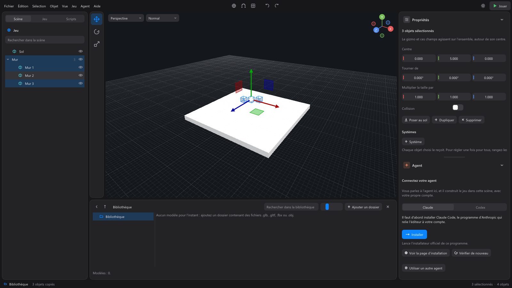

Prise en main¶
Cette page vous mène de la création d'un projet jusqu'au jeu qui tourne. Chaque étape renvoie à la page qui la détaille.
1. Créer un projet¶
Fichier > Nouveau projet... : choisissez où le ranger et son nom (« Mon jeu » est proposé). Un projet est un dossier qui contient tout votre jeu : ses scènes, les modèles qu'il utilise, ses réglages. Voir Projets et scènes.
Juste après, l'Assistant de création vous propose deux choix :
- Avec l'assistant : il vous pose quelques questions sur votre jeu (l'histoire, l'ambiance, des jours et des nuits qui passent, les lieux, le personnage, ce qu'on y fait, les gens à qui parler, les marchands, les quêtes, un écran titre...), une étape à la fois. Chaque choix dit à l'agent quel système l'apporte : cocher « Acheter et vendre chez des marchands » lui demande la Boutique. Suivant avance, Passer saute une question, Précédent revient. À la fin, il prépare Ta demande à l'agent : relisez-la, modifiez-la si vous voulez, puis Lancer l'envoie à l'agent, qui présente d'abord son plan et attend votre accord avant de construire. Enregistrer et fermer garde vos réponses pour plus tard.
- Partir de zéro : vous construisez vous-même, ou en parlant directement à l'agent.
L'assistant se rouvre à tout moment par Jeu > Assistant de création... ; vos réponses sont gardées dans le projet.
2. La fenêtre¶

- En haut : les menus (Fichier, Édition, Sélection, Objet, Vue, Jeu, Agent, Aide), quelques boutons au centre (repère du gizmo, magnétisme, quatre vues, annuler, rétablir), et à droite les Préférences (roue dentée) et le bouton Jouer.
- À gauche : trois onglets. Scène liste ce qu'il y a dans la scène, Jeu regroupe les commandes et les systèmes du jeu, Scripts ses scripts.
- Au centre : la vue 3D, avec sa colonne d'outils à gauche.
- En bas : la Bibliothèque, vos modèles et vos sons.
- À droite : les Propriétés de ce qui est sélectionné, et le panneau Agent. Chacun se replie par son chevron ; une poignée entre les deux partage la hauteur.
- Tout en bas, la barre d'état : Bibliothèque ouvre ou ferme la bibliothèque, le dernier message de l'éditeur (un clic ouvre la Console), et à droite l'état de l'agent, l'heure de la dernière sauvegarde automatique, le nombre d'objets sélectionnés et le nombre d'objets de la scène.
Chaque partie a sa page : voir L'éditeur.
3. Ajouter des modèles¶
- Ajoutez un dossier de modèles à la bibliothèque : Ajouter un dossier, puis Parcourir ou collez son chemin. Vous pouvez aussi glisser un dossier depuis l'explorateur Windows sur la fenêtre.
- Dans la bibliothèque, double-cliquez sur un modèle pour l'ajouter à la scène, ou glissez-le dans la vue 3D, à l'endroit voulu.
- Pour une forme simple : Objet > Créer (Cube, Sphère, Cylindre, Capsule, Plan), ou un clic droit dans la liste de l'onglet Scène.
Double-cliqué, le modèle arrive au centre de la vue ; glissé, il arrive là où vous le lâchez. La préférence Pose au sol à l'ajout, active par défaut, le pose ensuite sur le sol. Le fichier du modèle est copié dans le projet : votre bibliothèque ne change pas.
4. Placer les objets¶
- Choisir : un clic sur l'objet, dans la vue ou dans la liste. Ctrl + clic ajoute à la sélection ; glisser dans la vue trace un rectangle.
- Déplacer, pivoter, redimensionner : touches W, E, R, ou la colonne d'outils à gauche de la vue, puis tirez sur les poignées (le gizmo). Ou tapez les valeurs dans les Propriétés, section Position et taille.
- Poser au sol : touche Fin, ou le bouton Poser au sol des propriétés.
- Regarder autour : clic droit maintenu pour tourner, clic molette pour déplacer la vue, molette pour zoomer, F pour cadrer la sélection.
Voir La vue 3D.
5. Choisir le joueur¶
Le jeu a besoin d'un personnage à jouer. Sélectionnez un modèle (un personnage animé, de préférence), puis cliquez sur Définir comme joueur dans ses Propriétés. Ses propriétés montrent alors ses Déplacements, ses Animations et la Caméra du joueur : voir Les propriétés.
6. Jouer¶
F5, ou le bouton Jouer en haut à droite. Le jeu s'ouvre dans sa propre fenêtre ; l'éditeur reste ouvert à côté. Pendant que le jeu tourne, les réglages du joueur que vous changez dans les propriétés s'appliquent en direct. F5 ou Arrêter referme le jeu.
Dans le jeu, le joueur se déplace avec les commandes du jeu : par défaut Z Q S D sur un clavier AZERTY (W A S D sur un QWERTY), Maj gauche pour courir, Espace pour sauter, la souris pour tourner la caméra. Échap libère la souris.
7. Annuler¶
Tout s'annule, vos gestes comme ceux de l'agent : Ctrl+Z annule, Ctrl+Y rétablit. Les mêmes commandes sont dans le menu Édition et en flèches au centre de la barre du haut. Sous chaque réponse de l'agent, Annuler ces modifications défait tout ce qu'il a fait pendant ce tour.
8. Enregistrer¶
Ctrl+S enregistre la scène. Toutes les 60 secondes, une sauvegarde automatique garde une copie à part, sans toucher à votre fichier. Si l'éditeur se ferme sans que vous ayez enregistré, il vous propose au prochain lancement de Récupérer votre travail.
9. Demander à l'agent¶
Dans le panneau Agent, décrivez ce que vous voulez construire et appuyez sur Entrée. L'agent travaille dans la scène sous vos yeux. Voir L'agent.